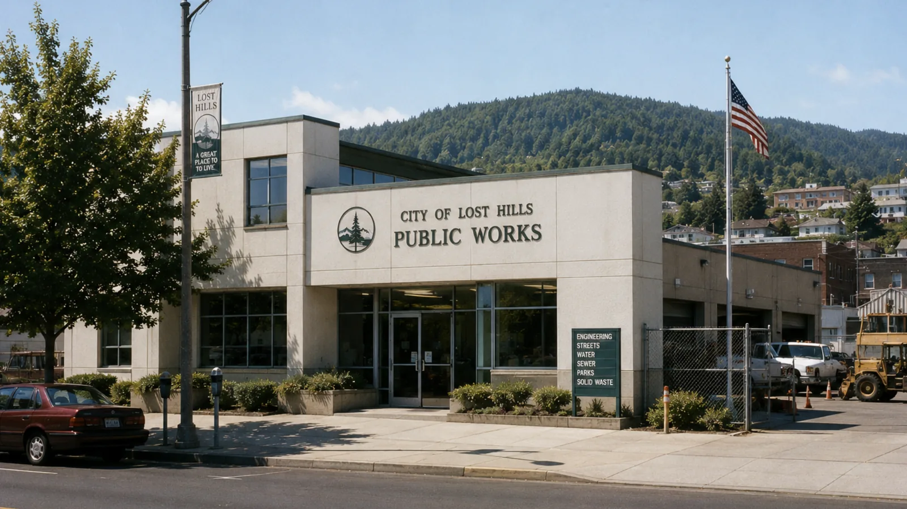
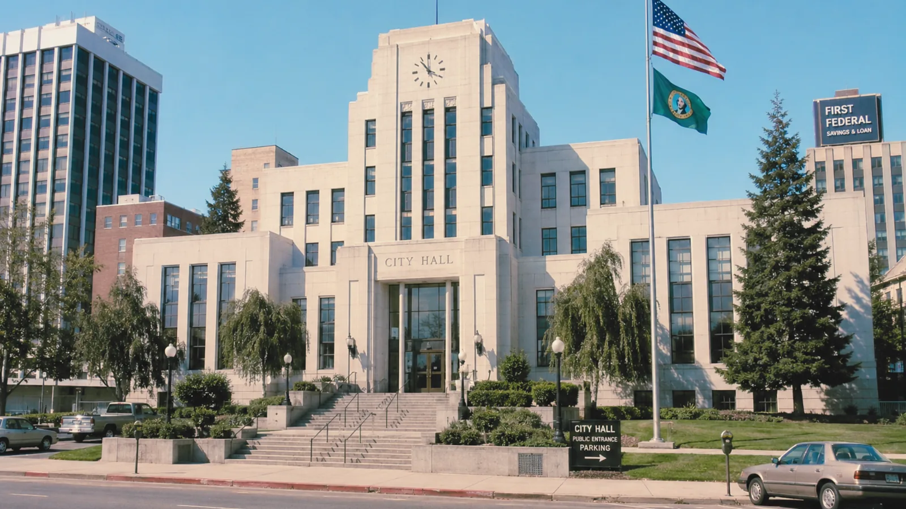
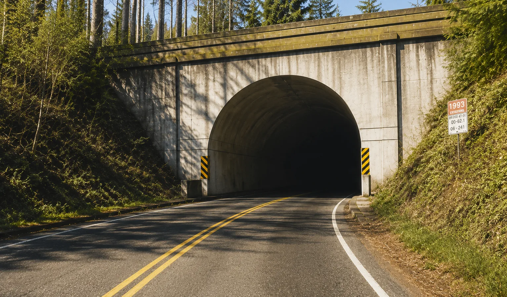
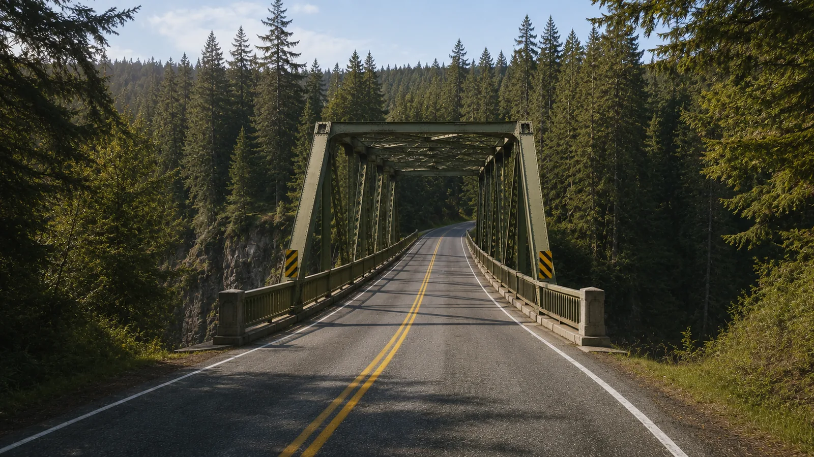

[#]Public Works & Civic Infrastructure

date of photo unverified')" />Lost Hills Public Works maintains streets, signs, bridges, tunnels, utilities, public facilities, and municipal equipment inventories. As part of the City Service Reform Program, the department is updating location records and response procedures in partnership with the City Clerk's Office, Emergency Services, Megabyte Computers, and Shadewater Labs.
Residents may notice temporary signage, service map updates, survey flags, utility crews, cable installation, or Shadewater field equipment during the CityNet infrastructure period.

photo date unverified')" />Temporary Directional Signs
Public Works is reviewing reports of unauthorized directional signs posted near Blackpine Road, Catfish Lake access routes, and east forest trails. Only signage bearing the City of Lost Hills seal should be considered official.
Residents are asked not to remove or reposition unofficial signs. Please report approximate location through the CityNet service form or contact the Clerk's Office directly.
East Approach Road Marking Advisory
Lost Hills Tunnel

photo date unverified')" />The Lost Hills Tunnel remains open to two-way traffic pending scheduled CityNet cable work, ventilation testing, and overnight maintenance. Drivers may experience brief delays during marked work periods.
Please observe all lane control signs and do not enter service alcoves or maintenance corridors. CityNet conduit markers in the tunnel approach are not removable by the public.
Sutter Gorge Bridge

inspection status unresolved')" />Residents should disregard unofficial closure postings and refer to the CityNet road status page for current information. Printed closure notices not issued by Public Works should be brought to City Hall for review.
Misplaced Property Reporting
Residents are asked to report large items found outside assigned facilities, including:
- Office furniture and filing equipment
- School equipment and classroom materials
- Musical instruments
- Public telephones and payphone housings
- Road signage and traffic control equipment
- Medical equipment
- Municipal vehicles found beyond marked service roads
Please do not move recovered items unless instructed by Public Works. Items may be part of an active inventory reconciliation process. Do not attempt to return items to what appears to be their original location without confirmation from the Clerk's Office.
Municipal Equipment Inventory
Some items listed in active municipal inventory may temporarily appear under review while department location records are updated. This may include equipment assigned to schools, public works facilities, Emergency Services, the Children's Care Wing, and CityNet installation crews.
| Infrastructure | Status | Notes |
|---|---|---|
| Lost Hills Tunnel | Open | CityNet conduit work overnight; brief delays possible |
| Sutter Gorge Bridge | Under review | Duplicate inspection records pending reconciliation |
| Blackpine Road | Open | Unauthorized signage reported east of Mile 3 |
| East Approach Road | Advisory | Centreline irregularity; repainting crew scheduled. |